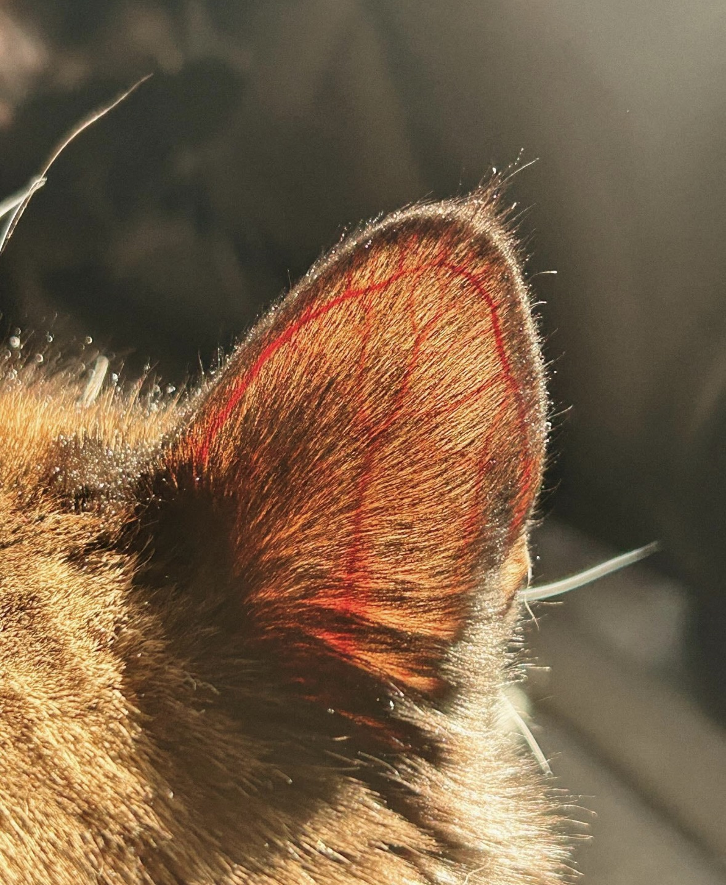

Photo: u/lightupletterBAbout
Hi, I'm Shreeram Jaikisan. This site is my space for exploring elliptic PDEs and trying to bridge the gap between linear and nonlinear elliptic PDEs. My motivation is mainly to solidify my own understanding by articulating these ideas and trying to put them into words.
My primary interests lie in analysis, particularly in partial differential equations and functional analysis.
During my BS–MS thesis, I worked on Sobolev spaces and their applications to linear elliptic PDEs.
These notes are a summary of an ongoing journey. I explore topics that interest me, and I try to break them down and share my own perspective on them.
While I strive for clarity and accuracy, this is fundamentally a learning process that I am sharing publicly. What is written here reflects my understanding of the material at the time of writing.
As my understanding develops, some explanations may change, some nuances might have been missed, and there may be errors.
During my MS thesis, I came across many such notes and explanations written by others that helped me immensely, and for which I will always be grateful. They helped me understand things that I could not understand from textbooks alone.
With this project, I hope that some of these explorations might also be helpful to others who are on a similar path.
Notes
These notes are based primarily on L. C. Evans' Partial Differential Equations. They are not intended to replace standard textbooks.
They reflect my own study of elliptic partial differential equations and are intended as companion notes that fill in omitted steps in proofs, explain ideas that I found difficult on a first reading, provide additional illustrations, and include solutions to selected exercises.
As my understanding develops, I will continue to revise and expand these notes whenever I encounter better explanations or learn new perspectives from other books or research papers.
I may eventually develop these notes into a more blog-like format. I also plan to add solutions to selected exercises as the project develops.